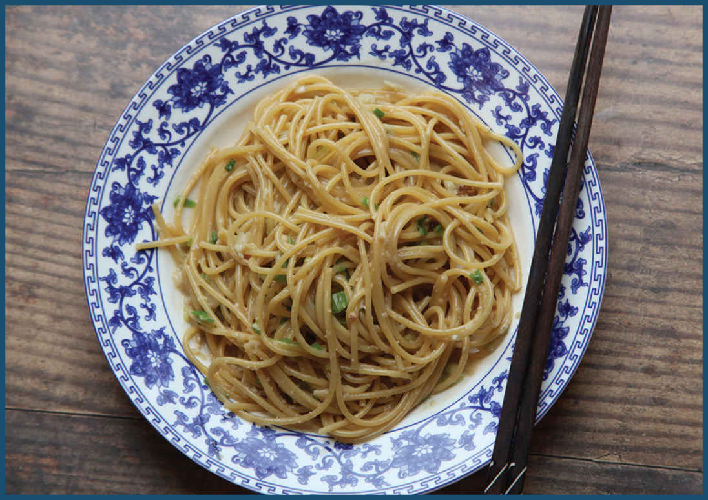

VIETNAMESE AMERICAN GARLIC NOODLES: A REAL SAN FRANCISCO TREAT

Garlic noodles are not the San Francisco treat. That would be Rice-a-Roni. But garlic noodles are a San Francisco treat and one worth making for yourself.
I do love Vietnamese food and have spent some time traveling in the country, but I’d never heard of garlic noodles before moving to the Bay Area, and that’s because they are not Vietnamese: They are Vietnamese American, created right in San Francisco by Helene An at Thanh Long restaurant. Born to an aristocratic family outside Hanoi, Helene’s family, the Trans, fled North Vietnam in 1955 and resettled in the South Vietnamese city of Dalat. In 1975, Helene was forced to flee once again, this time with her husband and three daughters. They eventually settled, penniless, in San Francisco, where they took up residence with An’s mother-in-law, Diana, who ran a small deli she bought in the Outer Sunset neighborhood in 1968.
The exact history of Thanh Long is a little muddy. In interviews, Helene’s daughter Elizabeth claims that her grandmother Diane’s deli was Italian when Helene and her family arrived in 1975, but an old poster touting its opening as the “first authentic Vietnamese restaurant on the West Coast” advertises its opening date as July 1, 1971, four years before Helene’s arrival. On that opening menu is baked crab—presumably the same baked Dungeness crab that is served today—but the garlic noodles are not there yet.
In any case, Helene, who had had experience with both Chinese and French cuisine, felt that the restaurant would find more success by eschewing authenticity in favor of dishes that were designed specifically to appeal to the local clientele. After a trip to a Nob Hill Italian restaurant where Helene was served a disappointingly bland bowl of garlic spaghetti, she created Thanh Long’s famous garlic noodles, a potent concoction flavored with fistfuls of garlic and a number of secret ingredients that my taste buds (and most copycat recipes) suggest are fish sauce, oyster sauce, soy sauce, lots of butter, and a smattering of Parmesan cheese. It’s an umami party, and all of the big names are invited. Since then, the An family has built an empire of swanky restaurants in San Francisco and Los Angeles out of those noodles, and it’s easy to taste why.
I had them for the first time in 2014, nearly 40 years after their creation. I had recently moved to San Francisco’s Mission District and had been invited out for dinner by a friend. I, not understanding the intricacies of San Francisco weather, set out on a warm summer afternoon, riding my friend’s little black Vespa from the Mission to the Outer Sunset, through San Francisco’s winding streets and hills, in nothing but a T-shirt. By the time we had finished our fourth bowl of noodles, San Francisco’s thick fog had set in and the temperature had dropped into the low fifties. By the time I made it home, soaking wet and shivering, the only thing I could think about was remembering my jacket the next time I went back.
BRINGING IT HOME
The Outer Sunset is a long way from where I live now, and the several trips I’ve made back there since have all been accompanied by long waits to snag a table. Fortunately, over the years I’ve worked out my own recipe, inspired by Helene An’s original, suited to fit my own preferences. I start by smashing fresh garlic cloves in a mortar and pestle, then sweating them gently in butter in my wok. Once they’ve lost their sharp bite and start to develop some mellow sweetness, I add the umami triple-threat of soy sauce, fish sauce, and oyster sauce. Meanwhile, I cook my spaghetti in a large skillet on another burner.
I did say spaghetti, and I did say skillet. Though the noodles at Thanh Long are tender fresh wheat noodles, I actually prefer to use dried Italian spaghetti for this dish, cooking it just under al dente and finishing it in the pan with the garlic sauce, more of a nod to its Italian origins. While many books would have you believe that you need a vat of vigorously boiling water to cook pasta, I prefer to cook pasta in a much smaller volume. It makes no difference to the pasta’s ability to retain a proper al dente bite (in blind taste tests, tasters, even expert tasters, cannot tell the difference between spaghetti cooked in a big pot vs. in a skillet with a couple inches of water), and it offers a few advantages. The first is that it’s faster: you don’t need to wait for a large pot of water to come to a boil. It also uses less water, something I am particularly conscious of when cooking in California. Finally, it actually improves the manner in which sauce clings to the pasta.
When I worked in an Italian restaurant, we had a fifteen-gallon gas-fired pasta machine that could boil six batches of fresh pasta at a time. To finish a plate of pasta, we’d add the cooked pasta to a pan with sauce, then splash some of the pasta water into the pan before vigorously heating it. The starchy pasta water would help the sauce emulsify. Sauce with pasta water comes out creamy, emulsified, and light. Sauce without pasta water comes out greasy and broken and has trouble sticking to the pasta. Over the course of the night, as the water in the machine got starchier and starchier, the dishes we sent out to customers would get progressively better—the starchier the pasta water, the better it is at getting sauce to cling.
At home, I don’t use the same pasta water over and over for dozens of servings of pasta, but using a smaller volume of water to cook dried pasta has much the same effect, creating pasta water with a more concentrated starch content.
When my spaghetti is just shy of al dente (typically 2 minutes short of the recommended cook time on the package), I transfer it over to the wok with a pair of tongs, along with whatever starchy liquid is clinging to it, grate in my cheese, and toss everything vigorously over the highest heat my cooktop can muster until the noodles are fully cooked and the liquid has reduced to a creamy, emulsified, garlic-packed sauce that you will want to eat by the spoonful.